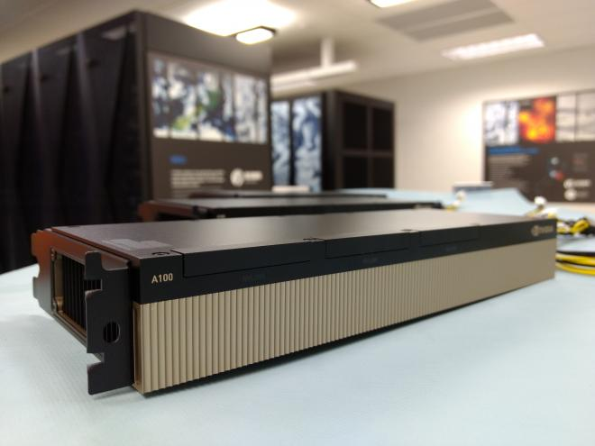

Submit Batch Jobs¶
This section details how to request access to a GPU (graphics processing unit) on NeSI for batch jobs. We will also see how to make sure that the installed deep learning packages properly find and use them.
Available GPUs¶

GPU are dedicated piece of hardware filled with specialised compute units to handle massively parallel computations1. The massively parallel architecture of deep learning models make them well-suited to run on GPUs, drastically decreasing their training time.
NeSI HPC platform gives access to different types of GPUs. Here is a little tour of the available capacity as of March 2024:
| GPU type | Location | Access type |
|---|---|---|
| 9 NVIDIA Tesla P100 PCIe 12GB cards (1 node with 1 GPU, 4 nodes with 2 GPUs) | Mahuika | Slurm and Jupyter |
| 5 NVIDIA Tesla P100 PCIe 12GB cards (5 nodes with 1 GPU) | Māui Ancil. | Slurm |
| 7 A100-1g.5gb instances (1 NVIDIA A100 PCIe 40GB card divided into 7 MIG GPU slices with 5GB memory each) | Mahuika | Slurm and Jupyter |
| 7 NVIDIA A100 PCIe 40GB cards (4 nodes with 1 GPU, 2 nodes with 2 GPUs) | Mahuika | Slurm |
| 4 NVIDIA HGX A100 boards (4 GPUs per board with 80GB memory each, 16 A100 GPUs in total) | Mahuika | Slurm |
Which one should you use?
- for small experimentations, start with a A100-1g.5gb or a P100,
- if you need to run legacy code (e.g. TensorFlow 1.x) try a P100,
- otherwise use the PCIe or HGX A100,
- and if you need large memory and/or multiple GPUs, use the HGX A100s.
Limits on GPU Jobs
- Per-project limit of 6 GPUs being used at a time.
- Per-project limit of 360 GPU-hours being allocated to running jobs. For example, you can use 6 GPUs at a time if your jobs run for 2 days, but only two GPUs if your jobs run for a week.
- No more than 64 CPUs per GPU job, to ensure that GPUs are not left idle due to lack of free CPUs.
- Per-user limit of one A100-1g.5gb GPU job.
Slurm job submission¶
When preparing our Slurm job script, we need to make sure we tell Slurm that we need a GPU, using
the --gpus-per-node option.
In a job submission script, the syntax is the following:
Depending on the GPU type, we may also need to specify a partition using --partition.
| GPU type | Slurm option |
|---|---|
| Mahuika P100 | |
| Māui Ancil. P100 | |
| A100-1g.5gb | |
| PCIe A100 (40GB) | |
| HGX A100 (80GB) | |
| Any A100 🚀 | |
For today’s exercises, we will use a big one 🤯, an HGX A100 GPU.
Let’s start with a very simple batch job, printing simple information about the requested GPU:
Create the file gpujob.sl in your workshop folder, for example using the nano editor:
Then let’s submit the job using sbatch:
You can check the state of all your jobs using squeue --me.
Once completed, chech the content of the Slurm log file (replace 44344744 with your job ID):
output
Tue Mar 12 09:38:23 2024
+-----------------------------------------------------------------------------+
| NVIDIA-SMI 525.85.12 Driver Version: 525.85.12 CUDA Version: 12.0 |
|-------------------------------+----------------------+----------------------+
| GPU Name Persistence-M| Bus-Id Disp.A | Volatile Uncorr. ECC |
| Fan Temp Perf Pwr:Usage/Cap| Memory-Usage | GPU-Util Compute M. |
| | | MIG M. |
|===============================+======================+======================|
| 0 NVIDIA A100-SXM... On | 00000000:C7:00.0 Off | 0 |
| N/A 35C P0 62W / 400W | 0MiB / 81920MiB | 0% Default |
| | | Disabled |
+-------------------------------+----------------------+----------------------+
+-----------------------------------------------------------------------------+
| Processes: |
| GPU GI CI PID Type Process name GPU Memory |
| ID ID Usage |
|=============================================================================|
| No running processes found |
+-----------------------------------------------------------------------------+
CUDA_VISIBLE_DEVICES=0
Note that nvidia-smi and CUDA_VISIBLE_DEVICES both report one GPU.
Exercise
- Try to request 2 HGX A100 and compare the output of the log file.
- Remove the
--partitionand--gpus-per-nodeoptions and compare the results.
Warning
As we have just seen, Slurm set the environment variable CUDA_VISIBLE_DEVICES for you, so you don’t need to do it.
TensorFlow example¶
Let’s continue with a more realistic example. We will use the following script to train a small CNN (convolutional neural network) to classify images from the CIFAR-10 dataset using TensorFlow.
This file is available in the workshop folder, let’s make a copy of it 🙂:
cd /nesi/project/nesi99991/introhpc2403/$USER
cp /nesi/project/nesi99991/introhpc2403/train_model.py ./
Let’s now explore how to submit a Slurm job to execute it. The job script will vary depending on the method we use to access TensorFlow.
Environment module¶
First, let’s try with tne TensorFlow environment module.
Let’s adapt our gpujob.sl script to load the environment module and run the script, inserting the following instructions at the end:
# load required environment modules
module purge
module load TensorFlow/2.13.0-gimkl-2022a-Python-3.11.3
# execute the script
python train_model.py "${SLURM_JOB_ID}_${SLURM_JOB_NAME}"
We also need to increase the memory to 8GB too.
train_model_env.sl
Let’s submit this script as a job:
Once completed, a new result folder should have appeared, with the logs and model checkpoint for this run (replace 44348778 with your job ID):
output
44348778_train_model_env.sl/
44348778_train_model_env.sl/logs
44348778_train_model_env.sl/logs/train
44348778_train_model_env.sl/logs/train/events.out.tfevents.1710266108.wmg001.2340955.0.v2
44348778_train_model_env.sl/logs/validation
44348778_train_model_env.sl/logs/validation/events.out.tfevents.1710266115.wmg001.2340955.1.v2
44348778_train_model_env.sl/trained_model_cifar10
44348778_train_model_env.sl/trained_model_cifar10/saved_model.pb
44348778_train_model_env.sl/trained_model_cifar10/fingerprint.pb
44348778_train_model_env.sl/trained_model_cifar10/keras_metadata.pb
44348778_train_model_env.sl/trained_model_cifar10/assets
44348778_train_model_env.sl/trained_model_cifar10/variables
44348778_train_model_env.sl/trained_model_cifar10/variables/variables.index
44348778_train_model_env.sl/trained_model_cifar10/variables/variables.data-00000-of-00001
Let’s now examine the log file to see how the training went (replace 44348778 with your job ID):
output
Tue Mar 12 17:55:02 2024
+-----------------------------------------------------------------------------+
| NVIDIA-SMI 525.85.12 Driver Version: 525.85.12 CUDA Version: 12.0 |
|-------------------------------+----------------------+----------------------+
| GPU Name Persistence-M| Bus-Id Disp.A | Volatile Uncorr. ECC |
| Fan Temp Perf Pwr:Usage/Cap| Memory-Usage | GPU-Util Compute M. |
| | | MIG M. |
|===============================+======================+======================|
| 0 NVIDIA A100-SXM... On | 00000000:46:00.0 Off | 0 |
| N/A 30C P0 63W / 400W | 0MiB / 81920MiB | 0% Default |
| | | Disabled |
+-------------------------------+----------------------+----------------------+
+-----------------------------------------------------------------------------+
| Processes: |
| GPU GI CI PID Type Process name GPU Memory |
| ID ID Usage |
|=============================================================================|
| No running processes found |
+-----------------------------------------------------------------------------+
CUDA_VISIBLE_DEVICES=0
The following modules were not unloaded:
(Use "module --force purge" to unload all):
1) XALT/minimal 2) slurm 3) NeSI
2024-03-12 17:55:04.385113: I tensorflow/core/platform/cpu_feature_guard.cc:182] This TensorFlow binary is optimized to use available CPU instructions in performance-critical operations.
To enable the following instructions: AVX2 FMA, in other operations, rebuild TensorFlow with the appropriate compiler flags.
2024-03-12 17:55:07.601961: I tensorflow/core/common_runtime/gpu/gpu_device.cc:1639] Created device /job:localhost/replica:0/task:0/device:GPU:0 with 78945 MB memory: -> device: 0, name: NVIDIA A100-SXM4-80GB, pci bus id: 0000:46:00.0, compute capability: 8.0
Model: "sequential"
_________________________________________________________________
Layer (type) Output Shape Param #
=================================================================
conv2d (Conv2D) (None, 30, 30, 32) 896
max_pooling2d (MaxPooling2 (None, 15, 15, 32) 0
D)
conv2d_1 (Conv2D) (None, 13, 13, 64) 18496
max_pooling2d_1 (MaxPoolin (None, 6, 6, 64) 0
g2D)
conv2d_2 (Conv2D) (None, 4, 4, 64) 36928
flatten (Flatten) (None, 1024) 0
dense (Dense) (None, 64) 65600
dense_1 (Dense) (None, 10) 650
=================================================================
Total params: 122570 (478.79 KB)
Trainable params: 122570 (478.79 KB)
Non-trainable params: 0 (0.00 Byte)
_________________________________________________________________
None
Epoch 1/5
2024-03-12 17:55:10.015697: I tensorflow/compiler/xla/stream_executor/cuda/cuda_dnn.cc:432] Loaded cuDNN version 8600
2024-03-12 17:55:10.528644: I tensorflow/compiler/xla/stream_executor/cuda/cuda_blas.cc:606] TensorFloat-32 will be used for the matrix multiplication. This will only be logged once.
2024-03-12 17:55:10.530676: I tensorflow/compiler/xla/service/service.cc:168] XLA service 0x153ead5d2f20 initialized for platform CUDA (this does not guarantee that XLA will be used). Devices:
2024-03-12 17:55:10.530705: I tensorflow/compiler/xla/service/service.cc:176] StreamExecutor device (0): NVIDIA A100-SXM4-80GB, Compute Capability 8.0
2024-03-12 17:55:10.534564: I tensorflow/compiler/mlir/tensorflow/utils/dump_mlir_util.cc:255] disabling MLIR crash reproducer, set env var `MLIR_CRASH_REPRODUCER_DIRECTORY` to enable.
2024-03-12 17:55:10.637117: I ./tensorflow/compiler/jit/device_compiler.h:186] Compiled cluster using XLA! This line is logged at most once for the lifetime of the process.
1563/1563 [==============================] - 7s 3ms/step - loss: 1.5294 - accuracy: 0.4401 - val_loss: 1.2523 - val_accuracy: 0.5466
Epoch 2/5
1563/1563 [==============================] - 4s 2ms/step - loss: 1.1661 - accuracy: 0.5858 - val_loss: 1.2037 - val_accuracy: 0.5744
Epoch 3/5
1563/1563 [==============================] - 4s 2ms/step - loss: 1.0246 - accuracy: 0.6401 - val_loss: 1.0090 - val_accuracy: 0.6460
Epoch 4/5
1563/1563 [==============================] - 4s 2ms/step - loss: 0.9348 - accuracy: 0.6713 - val_loss: 0.9410 - val_accuracy: 0.6689
Epoch 5/5
1563/1563 [==============================] - 4s 2ms/step - loss: 0.8608 - accuracy: 0.6988 - val_loss: 0.9287 - val_accuracy: 0.6745
313/313 - 0s - loss: 0.9287 - accuracy: 0.6745 - 352ms/epoch - 1ms/step
test accuracy: 0.6744999885559082
It looks like that everything went well 🥳!
Tip
TensorFlow is usually quite verbose, it is always good to check if it has detected the GPU and is using it. Here, the following line of the log file informs us that it is the case:
Conda environment¶
Let’s redo the same thing, but this time using the TensorFlow package installed in our conda environment.
To do so, we will need to modify load the Miniconda3 module and activate the environment before executing the script:
# load required environment modules
module purge
module load Miniconda3/22.11.1-1
# activate the conda environment
source $(conda info --base)/etc/profile.d/conda.sh
export PYTHONNOUSERSITE=1
conda deactivate
conda activate /nesi/nobackup/nesi99991/introhpc2403/$USER/venv
# execute the script
python train_model.py "${SLURM_JOB_ID}_${SLURM_JOB_NAME}"
Let’s copy our gpujob.sl script and adapt it:
Don’t forget to increase the memory to 8GB.
train_model_conda.sl
Let’s run this script:
Check the job state using squeue --me.
It seems to be slower than the version using the environment module 🤔.
Let’s examinate the log file content (replace 44349122 with your job ID):
output
Tue Mar 12 18:59:59 2024
+-----------------------------------------------------------------------------+
| NVIDIA-SMI 525.85.12 Driver Version: 525.85.12 CUDA Version: 12.0 |
|-------------------------------+----------------------+----------------------+
| GPU Name Persistence-M| Bus-Id Disp.A | Volatile Uncorr. ECC |
| Fan Temp Perf Pwr:Usage/Cap| Memory-Usage | GPU-Util Compute M. |
| | | MIG M. |
|===============================+======================+======================|
| 0 NVIDIA A100-SXM... On | 00000000:46:00.0 Off | 0 |
| N/A 30C P0 63W / 400W | 0MiB / 81920MiB | 0% Default |
| | | Disabled |
+-------------------------------+----------------------+----------------------+
+-----------------------------------------------------------------------------+
| Processes: |
| GPU GI CI PID Type Process name GPU Memory |
| ID ID Usage |
|=============================================================================|
| No running processes found |
+-----------------------------------------------------------------------------+
CUDA_VISIBLE_DEVICES=0
The following modules were not unloaded:
(Use "module --force purge" to unload all):
1) XALT/minimal 2) slurm 3) NeSI
2024-03-12 19:00:01.818851: I tensorflow/tsl/cuda/cudart_stub.cc:28] Could not find cuda drivers on your machine, GPU will not be used.
2024-03-12 19:00:01.855127: I tensorflow/tsl/cuda/cudart_stub.cc:28] Could not find cuda drivers on your machine, GPU will not be used.
2024-03-12 19:00:01.855498: I tensorflow/core/platform/cpu_feature_guard.cc:182] This TensorFlow binary is optimized to use available CPU instructions in performance-critical operations.
To enable the following instructions: AVX2 FMA, in other operations, rebuild TensorFlow with the appropriate compiler flags.
2024-03-12 19:00:02.591725: W tensorflow/compiler/tf2tensorrt/utils/py_utils.cc:38] TF-TRT Warning: Could not find TensorRT
2024-03-12 19:00:04.115146: W tensorflow/core/common_runtime/gpu/gpu_device.cc:1956] Cannot dlopen some GPU libraries. Please make sure the missing libraries mentioned above are installed properly if you would like to use GPU. Follow the guide at https://www.tensorflow.org/install/gpu for how to download and setup the required libraries for your platform.
Skipping registering GPU devices...
Model: "sequential"
_________________________________________________________________
Layer (type) Output Shape Param #
=================================================================
conv2d (Conv2D) (None, 30, 30, 32) 896
max_pooling2d (MaxPooling2D (None, 15, 15, 32) 0
)
conv2d_1 (Conv2D) (None, 13, 13, 64) 18496
max_pooling2d_1 (MaxPooling (None, 6, 6, 64) 0
2D)
conv2d_2 (Conv2D) (None, 4, 4, 64) 36928
flatten (Flatten) (None, 1024) 0
dense (Dense) (None, 64) 65600
dense_1 (Dense) (None, 10) 650
=================================================================
Total params: 122,570
Trainable params: 122,570
Non-trainable params: 0
_________________________________________________________________
None
Epoch 1/5
1563/1563 [==============================] - 37s 23ms/step - loss: 1.5266 - accuracy: 0.4439 - val_loss: 1.3006 - val_accuracy: 0.5370
Epoch 2/5
1563/1563 [==============================] - 35s 22ms/step - loss: 1.1699 - accuracy: 0.5855 - val_loss: 1.0767 - val_accuracy: 0.6192
Epoch 3/5
1563/1563 [==============================] - 35s 22ms/step - loss: 1.0244 - accuracy: 0.6394 - val_loss: 0.9981 - val_accuracy: 0.6482
Epoch 4/5
1563/1563 [==============================] - 35s 22ms/step - loss: 0.9237 - accuracy: 0.6775 - val_loss: 0.9513 - val_accuracy: 0.6672
Epoch 5/5
1563/1563 [==============================] - 35s 22ms/step - loss: 0.8549 - accuracy: 0.7008 - val_loss: 0.9288 - val_accuracy: 0.6801
313/313 - 2s - loss: 0.9288 - accuracy: 0.6801 - 2s/epoch - 6ms/step
WARNING:absl:Found untraced functions such as _jit_compiled_convolution_op, _jit_compiled_convolution_op, _jit_compiled_convolution_op, _update_step_xla while saving (showing 4 of 4). These functions will not be directly callable after loading.
test accuracy: 0.6801000237464905
Let’s have a closer look at the messages 🔎.
2024-03-12 19:00:01.855127: I tensorflow/tsl/cuda/cudart_stub.cc:28] Could not find cuda drivers on your machine, GPU will not be used.
Oh, that’s not good! TensorFlow could not find CUDA and therefore failed to use the GPU.
To fix it, we need to load the CUDA (and cuDNN) module and tell TensorFlow where to find it.
Edit the train_model_conda.sl script to insert these lines before running train_model.py:
train_model_conda.sl (fixed)
We can now resubmit the job:
And examine the log file to confirm that now the GPU is used by TensorFlow (replace 44349128 with your job ID):
output
Tue Mar 12 19:07:00 2024
+-----------------------------------------------------------------------------+
| NVIDIA-SMI 525.85.12 Driver Version: 525.85.12 CUDA Version: 12.0 |
|-------------------------------+----------------------+----------------------+
| GPU Name Persistence-M| Bus-Id Disp.A | Volatile Uncorr. ECC |
| Fan Temp Perf Pwr:Usage/Cap| Memory-Usage | GPU-Util Compute M. |
| | | MIG M. |
|===============================+======================+======================|
| 0 NVIDIA A100-SXM... On | 00000000:46:00.0 Off | 0 |
| N/A 30C P0 63W / 400W | 0MiB / 81920MiB | 0% Default |
| | | Disabled |
+-------------------------------+----------------------+----------------------+
+-----------------------------------------------------------------------------+
| Processes: |
| GPU GI CI PID Type Process name GPU Memory |
| ID ID Usage |
|=============================================================================|
| No running processes found |
+-----------------------------------------------------------------------------+
CUDA_VISIBLE_DEVICES=0
The following modules were not unloaded:
(Use "module --force purge" to unload all):
1) XALT/minimal 2) slurm 3) NeSI
2024-03-12 19:07:02.339469: I tensorflow/core/platform/cpu_feature_guard.cc:182] This TensorFlow binary is optimized to use available CPU instructions in performance-critical operations.
To enable the following instructions: AVX2 FMA, in other operations, rebuild TensorFlow with the appropriate compiler flags.
2024-03-12 19:07:03.048716: W tensorflow/compiler/tf2tensorrt/utils/py_utils.cc:38] TF-TRT Warning: Could not find TensorRT
2024-03-12 19:07:07.037005: I tensorflow/core/common_runtime/gpu/gpu_device.cc:1635] Created device /job:localhost/replica:0/task:0/device:GPU:0 with 78915 MB memory: -> device: 0, name: NVIDIA A100-SXM4-80GB, pci bus id: 0000:46:00.0, compute capability: 8.0
Model: "sequential"
_________________________________________________________________
Layer (type) Output Shape Param #
=================================================================
conv2d (Conv2D) (None, 30, 30, 32) 896
max_pooling2d (MaxPooling2D (None, 15, 15, 32) 0
)
conv2d_1 (Conv2D) (None, 13, 13, 64) 18496
max_pooling2d_1 (MaxPooling (None, 6, 6, 64) 0
2D)
conv2d_2 (Conv2D) (None, 4, 4, 64) 36928
flatten (Flatten) (None, 1024) 0
dense (Dense) (None, 64) 65600
dense_1 (Dense) (None, 10) 650
=================================================================
Total params: 122,570
Trainable params: 122,570
Non-trainable params: 0
_________________________________________________________________
None
Epoch 1/5
2024-03-12 19:07:10.016715: I tensorflow/compiler/xla/stream_executor/cuda/cuda_dnn.cc:424] Loaded cuDNN version 8600
2024-03-12 19:07:10.526440: I tensorflow/compiler/xla/stream_executor/cuda/cuda_blas.cc:637] TensorFloat-32 will be used for the matrix multiplication. This will only be logged once.
2024-03-12 19:07:10.778501: I tensorflow/compiler/xla/service/service.cc:169] XLA service 0x555575f88670 initialized for platform CUDA (this does not guarantee that XLA will be used). Devices:
2024-03-12 19:07:10.778540: I tensorflow/compiler/xla/service/service.cc:177] StreamExecutor device (0): NVIDIA A100-SXM4-80GB, Compute Capability 8.0
2024-03-12 19:07:10.783568: I tensorflow/compiler/mlir/tensorflow/utils/dump_mlir_util.cc:269] disabling MLIR crash reproducer, set env var `MLIR_CRASH_REPRODUCER_DIRECTORY` to enable.
2024-03-12 19:07:10.916067: I ./tensorflow/compiler/jit/device_compiler.h:180] Compiled cluster using XLA! This line is logged at most once for the lifetime of the process.
1563/1563 [==============================] - 8s 3ms/step - loss: 1.5133 - accuracy: 0.4475 - val_loss: 1.2346 - val_accuracy: 0.5525
Epoch 2/5
1563/1563 [==============================] - 4s 2ms/step - loss: 1.1527 - accuracy: 0.5927 - val_loss: 1.0675 - val_accuracy: 0.6208
Epoch 3/5
1563/1563 [==============================] - 4s 2ms/step - loss: 0.9922 - accuracy: 0.6524 - val_loss: 1.0370 - val_accuracy: 0.6448
Epoch 4/5
1563/1563 [==============================] - 4s 2ms/step - loss: 0.8910 - accuracy: 0.6887 - val_loss: 0.9684 - val_accuracy: 0.6682
Epoch 5/5
1563/1563 [==============================] - 4s 3ms/step - loss: 0.8165 - accuracy: 0.7137 - val_loss: 0.9052 - val_accuracy: 0.6897
313/313 - 0s - loss: 0.9052 - accuracy: 0.6897 - 361ms/epoch - 1ms/step
WARNING:absl:Found untraced functions such as _jit_compiled_convolution_op, _jit_compiled_convolution_op, _jit_compiled_convolution_op while saving (showing 3 of 3). These functions will not be directly callable after loading.
test accuracy: 0.6897000074386597
Success! Now TensorFlow uses the GPU:
2024-03-12 19:07:10.778540: I tensorflow/compiler/xla/service/service.cc:177] StreamExecutor device (0): NVIDIA A100-SXM4-80GB, Compute Capability 8.0
and each epoch takes 4s instead of 35s:
Epoch 4/5
1563/1563 [==============================] - 4s 2ms/step - loss: 0.8910 - accuracy: 0.6887 - val_loss: 0.9684 - val_accuracy: 0.6682
Warning
Depending on the version of TensorFlow installed, you will need to load different version of CUDA and cuDNN. Check the TensorFlow compatibility matrix to find which version you need.
If the corresponding environment modules do not exist on NeSI, please contact your friendly NeSI support team at support@nesi.org.nz to request it to be installed.
Warning
For other packages, like PyTorch or Jax, you may need to load CUDA and/or cuDNN.
It depends if the CUDA (and cuDNN) toolkit gets installed by conda or pip as dependency, or not.
You can check this by looking at the list of packages installed in your conda environment using conda export.
Here is an example with the conda environment created for this workshop:
Apptainer container¶
Finally, let’s try with the container approach.
To run our python script using the container, we need to:
- load the corresponding environment module
- use the
apptainer execcommand to execute the local script using the interpreter and packages inside the container
Info
- The
--nvoption is needed to expose the GPU inside the container. - Containers are expected to have their own copy of the CUDA toolkit inside, therefore we don’t need to the load the CUDA (or cuDNN) environment module.
Let’s create another job submission script (and don’t forget to increase memory to 8GB):
train_model_apptainer.sl
Let’s submit the job:
And look at the log file once the job has completed (replace 44349268 with your job ID):
output
Tue Mar 12 19:33:00 2024
+-----------------------------------------------------------------------------+
| NVIDIA-SMI 525.85.12 Driver Version: 525.85.12 CUDA Version: 12.0 |
|-------------------------------+----------------------+----------------------+
| GPU Name Persistence-M| Bus-Id Disp.A | Volatile Uncorr. ECC |
| Fan Temp Perf Pwr:Usage/Cap| Memory-Usage | GPU-Util Compute M. |
| | | MIG M. |
|===============================+======================+======================|
| 0 NVIDIA A100-SXM... On | 00000000:46:00.0 Off | 0 |
| N/A 30C P0 63W / 400W | 0MiB / 81920MiB | 0% Default |
| | | Disabled |
+-------------------------------+----------------------+----------------------+
+-----------------------------------------------------------------------------+
| Processes: |
| GPU GI CI PID Type Process name GPU Memory |
| ID ID Usage |
|=============================================================================|
| No running processes found |
+-----------------------------------------------------------------------------+
CUDA_VISIBLE_DEVICES=0
The following modules were not unloaded:
(Use "module --force purge" to unload all):
1) XALT/minimal 2) slurm 3) NeSI
WARNING: SINGULARITY_TMPDIR and APPTAINER_TMPDIR have different values, using the latter
13:4: not a valid test operator: (
13:4: not a valid test operator: 525.85.12
2024-03-12 19:33:13.535779: E external/local_xla/xla/stream_executor/cuda/cuda_dnn.cc:9373] Unable to register cuDNN factory: Attempting to register factory for plugin cuDNN when one has already been registered
2024-03-12 19:33:13.535849: E external/local_xla/xla/stream_executor/cuda/cuda_fft.cc:607] Unable to register cuFFT factory: Attempting to register factory for plugin cuFFT when one has already been registered
2024-03-12 19:33:13.686115: E external/local_xla/xla/stream_executor/cuda/cuda_blas.cc:1534] Unable to register cuBLAS factory: Attempting to register factory for plugin cuBLAS when one has already been registered
2024-03-12 19:33:13.823985: I tensorflow/core/platform/cpu_feature_guard.cc:183] This TensorFlow binary is optimized to use available CPU instructions in performance-critical operations.
To enable the following instructions: SSE3 SSE4.1 SSE4.2 AVX, in other operations, rebuild TensorFlow with the appropriate compiler flags.
2024-03-12 19:33:22.353297: I tensorflow/core/common_runtime/gpu/gpu_device.cc:1926] Created device /job:localhost/replica:0/task:0/device:GPU:0 with 78867 MB memory: -> device: 0, name: NVIDIA A100-SXM4-80GB, pci bus id: 0000:46:00.0, compute capability: 8.0
Model: "sequential"
_________________________________________________________________
Layer (type) Output Shape Param #
=================================================================
conv2d (Conv2D) (None, 30, 30, 32) 896
max_pooling2d (MaxPooling2 (None, 15, 15, 32) 0
D)
conv2d_1 (Conv2D) (None, 13, 13, 64) 18496
max_pooling2d_1 (MaxPoolin (None, 6, 6, 64) 0
g2D)
conv2d_2 (Conv2D) (None, 4, 4, 64) 36928
flatten (Flatten) (None, 1024) 0
dense (Dense) (None, 64) 65600
dense_1 (Dense) (None, 10) 650
=================================================================
Total params: 122570 (478.79 KB)
Trainable params: 122570 (478.79 KB)
Non-trainable params: 0 (0.00 Byte)
_________________________________________________________________
None
Epoch 1/5
2024-03-12 19:33:25.035720: I external/local_xla/xla/stream_executor/cuda/cuda_dnn.cc:467] Loaded cuDNN version 90000
2024-03-12 19:33:28.759273: I external/local_xla/xla/service/service.cc:168] XLA service 0x55555bf92310 initialized for platform CUDA (this does not guarantee that XLA will be used). Devices:
2024-03-12 19:33:28.760801: I external/local_xla/xla/service/service.cc:176] StreamExecutor device (0): NVIDIA A100-SXM4-80GB, Compute Capability 8.0
2024-03-12 19:33:28.764827: I tensorflow/compiler/mlir/tensorflow/utils/dump_mlir_util.cc:269] disabling MLIR crash reproducer, set env var `MLIR_CRASH_REPRODUCER_DIRECTORY` to enable.
WARNING: All log messages before absl::InitializeLog() is called are written to STDERR
I0000 00:00:1710272008.857828 2346162 device_compiler.h:186] Compiled cluster using XLA! This line is logged at most once for the lifetime of the process.
1563/1563 [==============================] - 12s 3ms/step - loss: 1.5514 - accuracy: 0.4331 - val_loss: 1.2823 - val_accuracy: 0.5290
Epoch 2/5
1563/1563 [==============================] - 4s 3ms/step - loss: 1.1781 - accuracy: 0.5816 - val_loss: 1.1526 - val_accuracy: 0.5874
Epoch 3/5
1563/1563 [==============================] - 4s 3ms/step - loss: 1.0207 - accuracy: 0.6384 - val_loss: 1.0523 - val_accuracy: 0.6281
Epoch 4/5
1563/1563 [==============================] - 4s 3ms/step - loss: 0.9263 - accuracy: 0.6742 - val_loss: 0.9380 - val_accuracy: 0.6695
Epoch 5/5
1563/1563 [==============================] - 4s 3ms/step - loss: 0.8484 - accuracy: 0.7035 - val_loss: 0.9007 - val_accuracy: 0.6905
313/313 - 0s - loss: 0.9007 - accuracy: 0.6905 - 403ms/epoch - 1ms/step
test accuracy: 0.690500020980835
Good news, it seems to have worked well 😎, finding the GPU and using it (4s per epoch):
2024-03-12 19:33:28.760801: I external/local_xla/xla/service/service.cc:176] StreamExecutor device (0): NVIDIA A100-SXM4-80GB, Compute Capability 8.0
...
1563/1563 [==============================] - 4s 3ms/step - loss: 0.9263 - accuracy: 0.6742 - val_loss: 0.9380 - val_accuracy: 0.6695
In the next section, we will have a look at how to monitor the jobs and the model training process.
-
Recent cards from NVIDIA have even more dedicated processing units, Tensor Cores, that massively accelerate lower-precision matrix-matrix multiplications. ↩